K-means clustering#
So far we have only addressed supervised learning models, namely regression and classification. In this module we introduce unsupervised learning for the first time.
In this notebook we explore the k-means algorithm, which seeks to group data based on the pairwise distances between data points. To illustrate the different concepts, we retain some of the features from the penguins dataset.
import pandas as pd
columns_to_keep = [
"Culmen Length (mm)",
"Culmen Depth (mm)",
"Flipper Length (mm)",
"Body Mass (g)",
"Sex",
"Species",
]
penguins = pd.read_csv("../datasets/penguins.csv")[columns_to_keep].dropna()
penguins["Species"] = penguins["Species"].str.split(" ").str[0]
penguins
| Culmen Length (mm) | Culmen Depth (mm) | Flipper Length (mm) | Body Mass (g) | Sex | Species | |
|---|---|---|---|---|---|---|
| 0 | 39.1 | 18.7 | 181.0 | 3750.0 | MALE | Adelie |
| 1 | 39.5 | 17.4 | 186.0 | 3800.0 | FEMALE | Adelie |
| 2 | 40.3 | 18.0 | 195.0 | 3250.0 | FEMALE | Adelie |
| 4 | 36.7 | 19.3 | 193.0 | 3450.0 | FEMALE | Adelie |
| 5 | 39.3 | 20.6 | 190.0 | 3650.0 | MALE | Adelie |
| ... | ... | ... | ... | ... | ... | ... |
| 339 | 55.8 | 19.8 | 207.0 | 4000.0 | MALE | Chinstrap |
| 340 | 43.5 | 18.1 | 202.0 | 3400.0 | FEMALE | Chinstrap |
| 341 | 49.6 | 18.2 | 193.0 | 3775.0 | MALE | Chinstrap |
| 342 | 50.8 | 19.0 | 210.0 | 4100.0 | MALE | Chinstrap |
| 343 | 50.2 | 18.7 | 198.0 | 3775.0 | FEMALE | Chinstrap |
334 rows × 6 columns
We know that this datasets contains data about 3 different species of penguins, but let’s not rely on such information for the moment. Instead we can address the task using clustering. This could be the case, for example, when analyzing newly collected penguin data in the wild where species haven’t yet been identified, or when the goal is to detect natural groupings such as subpopulations, hybrids, or other variations. It’s also useful as a data exploration tool: before committing to a classifier, clustering can help assess whether the chosen features separate the data well.
Let’s hide this column for now. We will only use it at the end of this notebook:
species = penguins["Species"]
penguins = penguins.drop(columns=["Species"])
Let’s take a first look at the structure of the available features using a
pairplot:
import seaborn as sns
_ = sns.pairplot(penguins, hue="Sex", height=4)
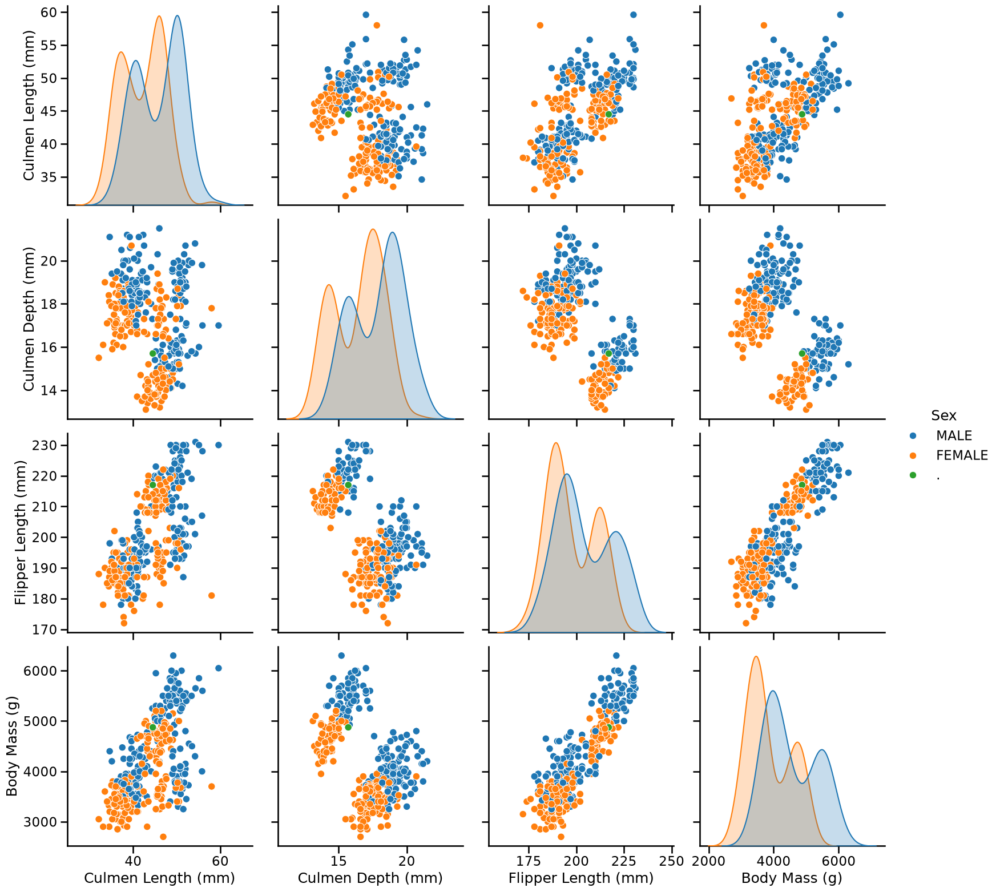
On these plots, we visually recognize 2 to 3 clusters depending on the feature pairs. We can also notice that female penguins are generally smaller than male penguins.
Let us focus on female individuals to visually assess if that subset of data leads to better separated clusters:
female_penguins = penguins.query("Sex == 'FEMALE'")
_ = sns.pairplot(female_penguins, height=4)
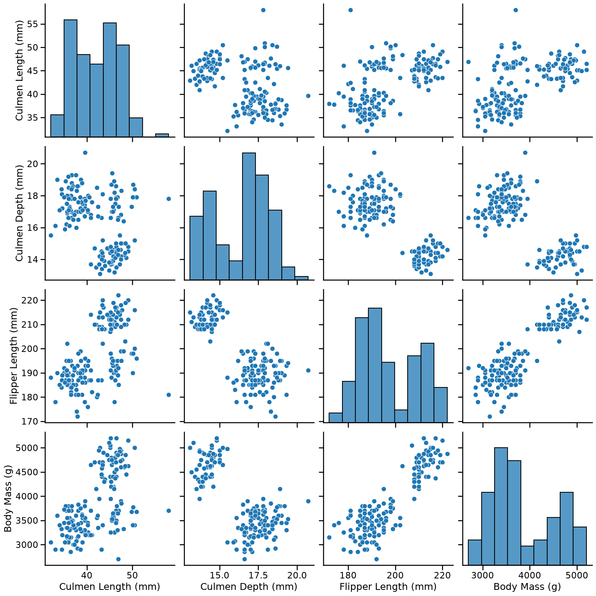
Intuitively, a good cluster should be compact (with points close to each other), and well-separated from other clusters, which is indeed the case for this subset of the data.
In particular we can see that if we only consider:
Culmen Length and Body Mass, we can distinguish 3 clusters;
Culmen Depth and Body Mass, we can distinguish 2 clusters.
Let’s try to apply the k-means algorithm on the first pairs of columns to see
whether we can find the clusters that we visually identified. The
hyperparameter n_clusters sets the numbers of clusters and the
random_state controls the centroid initialization.
from sklearn.cluster import KMeans
kmeans = KMeans(n_clusters=3, random_state=0)
labels_cl_vs_bm = kmeans.fit_predict(
female_penguins[["Culmen Length (mm)", "Body Mass (g)"]]
)
labels_cl_vs_bm
array([2, 1, 1, 1, 1, 1, 1, 1, 1, 2, 2, 1, 1, 1, 1, 1, 1, 1, 1, 1, 1, 1,
1, 1, 1, 1, 1, 1, 1, 1, 1, 1, 1, 1, 1, 1, 1, 1, 2, 1, 1, 1, 1, 1,
1, 1, 1, 1, 1, 1, 2, 1, 2, 1, 2, 1, 1, 1, 1, 1, 1, 1, 1, 1, 1, 1,
1, 1, 1, 1, 1, 1, 1, 0, 2, 0, 0, 2, 0, 0, 2, 2, 0, 0, 2, 0, 0, 0,
0, 0, 0, 2, 2, 2, 0, 2, 0, 0, 2, 0, 2, 2, 2, 2, 0, 0, 0, 0, 0, 0,
0, 0, 0, 0, 0, 0, 0, 0, 0, 0, 0, 0, 0, 0, 0, 0, 0, 2, 0, 0, 0, 1,
1, 2, 1, 2, 2, 1, 1, 1, 1, 1, 1, 1, 1, 1, 1, 1, 2, 2, 1, 1, 1, 1,
1, 1, 1, 1, 1, 1, 1, 1, 1, 1, 2], dtype=int32)
Tip
Here we used the fit_predict method, which does both steps at once: it
learns from the data just as using fit, and immediately returns cluster
labels for each data point using predict. Cluster labels are coded with an
arbitrary integer between 0 and n_clusters - 1.
Let’s consolidate these labels in the original dataframe and visualize the clusters:
ax = sns.scatterplot(
data=female_penguins.assign(kmeans_labels=labels_cl_vs_bm),
x="Culmen Length (mm)",
y="Body Mass (g)",
hue="kmeans_labels",
palette="deep",
alpha=0.7,
)
sns.move_legend(ax, "upper left", bbox_to_anchor=(1, 1))
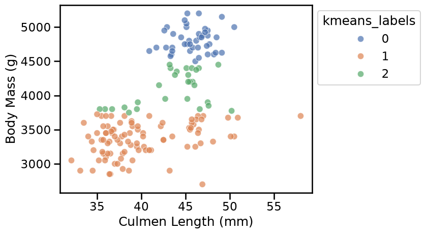
The result is disappointing: the 3 clusters found by k-means do not match what we would have naively expected from the scatter plot.
What could explain this?
Clusters are defined by the distance between data points, and the KMeans
algorithm tries to minimize the distance between data points and their
cluster centroid. But as we can see on the axis of the scatter plot, the
values of “Culmen Length (mm)” and “Body Mass (g)” are not on the same scale.
We can visualize this by manually setting the same scale to both axes:
min_value = 0
max_value = female_penguins["Body Mass (g)"].max() * 1.1
ax = sns.scatterplot(
data=female_penguins.assign(kmeans_labels=labels_cl_vs_bm),
x="Culmen Length (mm)",
y="Body Mass (g)",
hue="kmeans_labels",
palette="deep",
alpha=0.7,
)
ax.set(
xlim=(min_value, max_value),
ylim=(min_value, max_value),
aspect="equal",
)
sns.move_legend(ax, "upper left", bbox_to_anchor=(1, 1))
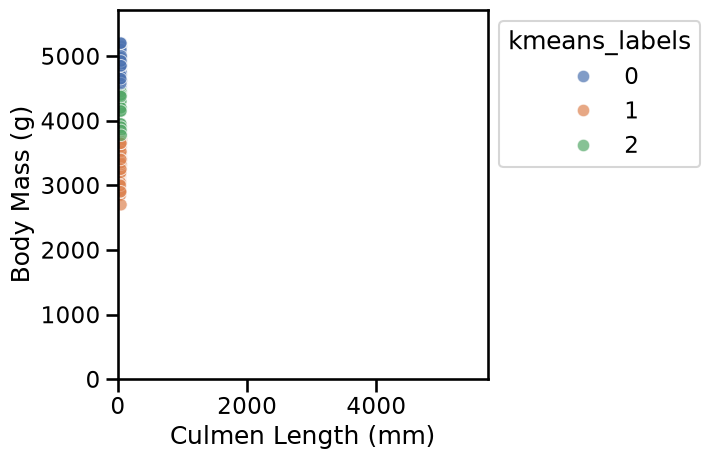
We thus confirm that, when using in the original units, the distances between data points are almost entirely dominated by the “Body Mass (g)” feature, which has much larger numerical values than the “Culmen Length (mm)” feature.
To mitigate this problem, we can instead define a pipeline to scale the numerical features before clustering. This way, all features contribute similarly to the distance calculations.
from sklearn.pipeline import make_pipeline
from sklearn.preprocessing import StandardScaler
scaled_kmeans = make_pipeline(
StandardScaler(), KMeans(n_clusters=3, random_state=0)
)
Notice that scaling features by their standard deviation using
StandardScaler is just one way to achieve this. Other options include
RobustScaler, MinMaxScaler, and several others, which work similarly but
may behave differently depending on the data. For more details, refer to the
preprocessing data section in the
scikit-learn user guide.
To avoid repeating the code for plotting, we can define a helper function as follows:
def plot_kmeans_clusters_on_2d_data(
clustering_model,
data,
first_feature_name,
second_feature_name,
):
labels = clustering_model.fit_predict(
data[[first_feature_name, second_feature_name]]
)
ax = sns.scatterplot(
data=data.assign(kmeans_labels=labels),
x=first_feature_name,
y=second_feature_name,
hue="kmeans_labels",
palette="deep",
alpha=0.7,
)
sns.move_legend(ax, "upper left", bbox_to_anchor=(1, 1))
plot_kmeans_clusters_on_2d_data(
scaled_kmeans, female_penguins, "Culmen Length (mm)", "Body Mass (g)"
)
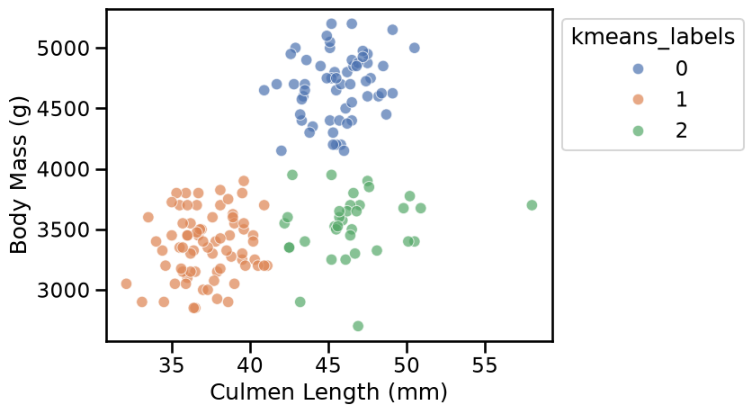
Now the results of the k-means cluster better match our visual intuition on this pair of features.
Let’s do a similar analysis on the second pair of features, namely “Culmen Depth (mm)” and “Body Mass (g)”. To do so, let’s refactor the code above as a utility function:
scaled_kmeans = make_pipeline(
StandardScaler(), KMeans(n_clusters=2, random_state=0)
)
plot_kmeans_clusters_on_2d_data(
scaled_kmeans, female_penguins, "Culmen Depth (mm)", "Body Mass (g)"
)
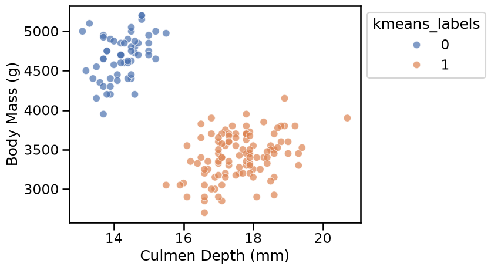
Here again the clusters are well separated and the k-means algorithm identified clusters that match our visual intuition.
We can also try to apply the k-means algorithm with a larger value for
n_clusters:
scaled_kmeans = make_pipeline(
StandardScaler(), KMeans(n_clusters=6, random_state=0)
)
plot_kmeans_clusters_on_2d_data(
scaled_kmeans, female_penguins, "Culmen Length (mm)", "Body Mass (g)"
)
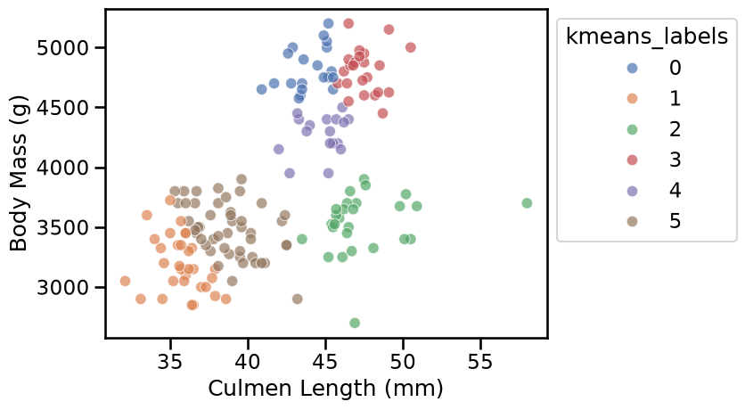
When we select a large value of n_clusters, we observe that k-means builds
as many groups as requested even if the resulting clusters are not well
separated.
Let’s now see if we can identify suitable values for the number of clusters based on some heuristics. But before that, remember that k-means work by minimizing the within-cluster sum of squared distances (normally denoted by its acronym WCSS or also known as inertia). This is, we minimize the sum of distances between the points in each cluster and the cluster’s centroid.
We start by plotting the evolution of the WCSS metric as a function of the number of clusters.
import matplotlib.pyplot as plt
wcss = []
n_clusters_values = range(1, 11)
for n_clusters in n_clusters_values:
model = make_pipeline(
StandardScaler(),
KMeans(n_clusters=n_clusters, random_state=0),
)
cluster_labels = model.fit_predict(
female_penguins[["Culmen Length (mm)", "Body Mass (g)"]]
)
wcss.append(model.named_steps["kmeans"].inertia_)
plt.plot(n_clusters_values, wcss, marker="o")
plt.xlabel("Number of clusters (n_clusters)")
plt.ylabel("WCSS (or inertia)")
_ = plt.title("Elbow method using WCSS")
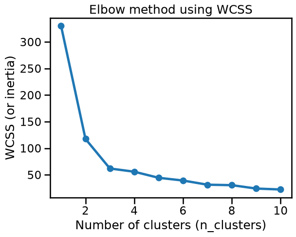
We can observe the so-called “elbow” in the curve (the point with maximum
curvature) around n_clusters=3. This matches our visual intuition coming
from the “Culmen Length” vs “Body Mass” scatter plot.
However, the WCSS value decreases monotonically as the number of clusters increases, and then we may be overlooking important information.
As an alternative, we can use the silhouette score, which measures both
the overall cohesion (i.e. the intra-cluster sum of distances) and how
well-separated are neighboring clusters (i.e. the inter-cluster sum of
distances). It does not increase or decrease a priori with the number of
clusters, and then it’s easier to interpret in terms of cluster quality for a
given n_clusters.
Let’s now plot the silhouette score. Notice that this method requires access to the preprocessed features:
from sklearn.metrics import silhouette_score
def plot_silhouette_scores(
data,
clustering_model=None,
preprocessor=None,
n_clusters_values=range(2, 11),
title_details="all features",
):
if clustering_model is None:
clustering_model = KMeans(random_state=0)
if preprocessor is None:
preprocessor = StandardScaler()
preprocessed_data = preprocessor.fit_transform(data)
silhouette_scores = []
for n_clusters in n_clusters_values:
clustering_model.set_params(n_clusters=n_clusters)
cluster_labels = clustering_model.fit_predict(preprocessed_data)
score = silhouette_score(preprocessed_data, cluster_labels)
silhouette_scores.append(score)
plt.plot(n_clusters_values, silhouette_scores, marker="o")
plt.xlabel("Number of clusters (n_clusters)")
plt.ylabel("Silhouette score\n(higher is better)")
_ = plt.title("Silhouette scores using\n" + title_details)
plot_silhouette_scores(
female_penguins[["Culmen Length (mm)", "Body Mass (g)"]],
title_details="Culmen Length and Body Mass",
)
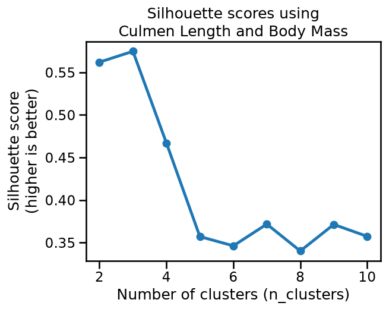
The silhouette score reaches a maximum when n_clusters=3, which confirms our
visual intuition on this 2D dataset.
We can also notice that the silhouette score is similarly high for
n_clusters=2, and has an intermediate value for n_clusters=4. It is
possible that those two values would also yield qualitatively meaningful
clusters, but that is less the case for n_clusters=5 or more.
Let’s compare this to the results obtained on the second pair of features:
plot_silhouette_scores(
female_penguins[["Culmen Depth (mm)", "Body Mass (g)"]],
title_details="Culmen Depth and Body Mass",
)
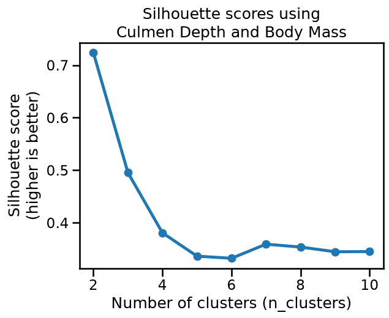
The plot reaches a clear maximum silhouette score when n_clusters=2, which
matches our intuition for those two features.
We can now try to apply the k-means algorithm on the full dataset, i.e. on all numerical features and all rows, regardless of the “Sex” feature, to see whether k-means can discover meaningful clusters in the whole data.
from sklearn.compose import make_column_transformer, make_column_selector
from sklearn.preprocessing import OneHotEncoder
preprocessor = make_column_transformer(
(
OneHotEncoder(drop="if_binary"),
make_column_selector(dtype_exclude="number"),
),
(
StandardScaler(),
make_column_selector(dtype_include="number"),
),
)
plot_silhouette_scores(penguins, preprocessor=preprocessor)
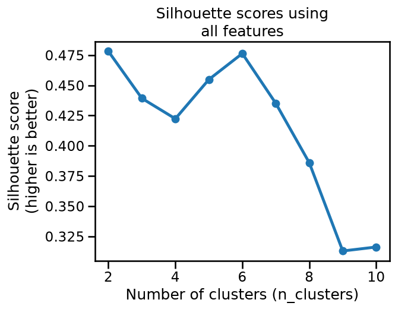
Based on the silhouette scores, it seems that k-means would prefer to cluster those features into either 2 or 6 clusters.
Let’s try to visualize the clusters obtained with n_clusters=6:
model = make_pipeline(
preprocessor,
KMeans(n_clusters=6, random_state=0),
)
cluster_labels = model.fit_predict(penguins)
_ = sns.pairplot(
penguins.assign(cluster_label=cluster_labels),
hue="cluster_label",
palette="deep",
height=4,
)
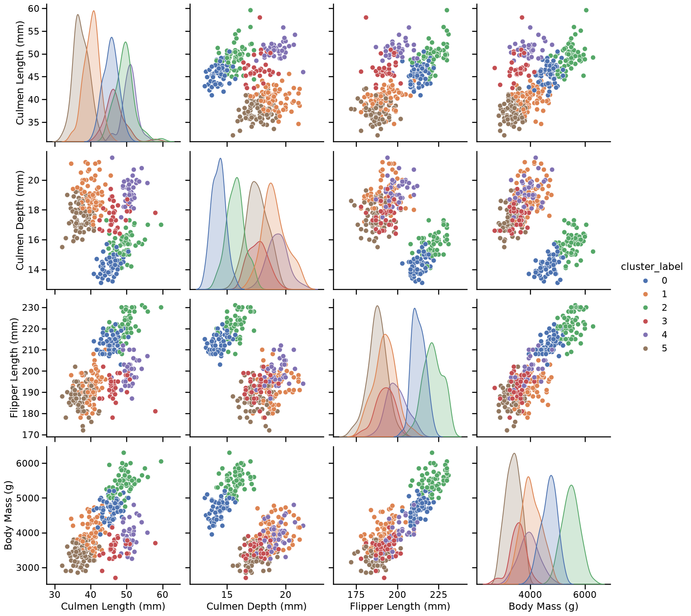
Since this is high-dimensional data (5D), the pairplot (computed only for the 4 numerical features) only offers a limited perspective on the clusters. Despite this limitation, the clusters do appear meaningful, and in particular we can notice that they potentially correspond to the 3 species of penguins present in the dataset (Adelie, Chinstrap, and Gentoo) further splitted by Sex (2 clusters for each species, one for males and one for females).
Let’s try to confirm this hypothesis by looking at the original “Species” labels combined with the “Sex”:
species_and_sex_labels = species + " " + penguins["Sex"]
species_and_sex_labels.value_counts()
Adelie MALE 73
Adelie FEMALE 73
Gentoo MALE 61
Gentoo FEMALE 58
Chinstrap FEMALE 34
Chinstrap MALE 34
Gentoo . 1
Name: count, dtype: int64
_ = sns.pairplot(
penguins.assign(species_and_sex=species_and_sex_labels),
hue="species_and_sex",
palette="deep",
height=4,
)
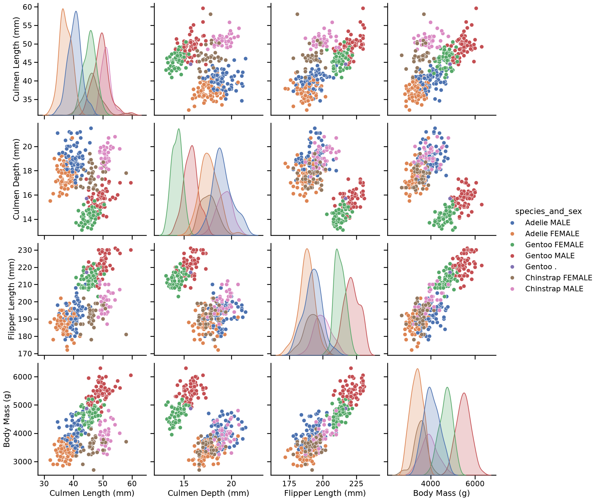
This plot seems to be very similar to the pairplot we obtained with the 6 clusters found by k-means on our preprocessed data, i.e. in both cases plots that display 3 clusters can be further divided into a group of proportionally smaller penguins. Only the colors may differ, as the ordering of the labels is arbitrary (both for the k-means cluster and the manually assigned labels).
The conclusion is that we relate the clusters found by running k-means on those preprocessed features to a meaningful (human) way to partition the penguins records. Notice however that this may not always be the case.
We cannot stress enough that the choice of the features and preprocessing steps are crucial: if we had not standardized the numerical data, or we had not included the “Sex” feature, or if we had scaled its one-hot encoding by a factor of 10, we would probably not have been able to discover interpretable clusters.
Furthermore, many natural datasets would not satisfy the k-means assumptions even after non-trivial preprocessing. We will see how to deal with more general cases later in this module.